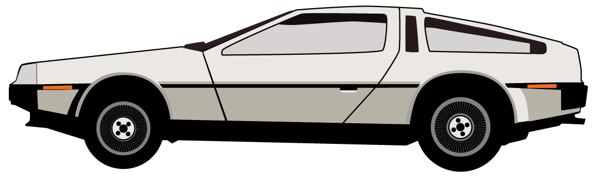

"People who like quotations love meaningless generalizations."
I wanted to get into iOS development, so I started the Stanford iOS development course. The first example project this course taught me how to create was a calculator. I was planning to create a design calculator app that would help designers calculate dimensions, layouts, font sizes, ratios, and maybe even colors that were based on mathematical and visual principles such as Fibonacci, the Golden Ratio, the rule of thirds, the Gestalt laws, and so on. As a bonus I would include a daily inspirational quote from a renowned designer.
While I was going through the Stanford course I found that drawing the designers and finding good quotes was a lot more fun than learning a new programming language (Swift).
It took me a while get a basic app programmed in Swift, but it only took me an afternoon to build a first release for a Chrome extension. After that I decided to focus on the quotes first and eventually use the extension as a marketing tool to get more app downloads.
The Chrome extension shows a different quote every day, and seriousness.nl/quotes is a mirror of the extension.
